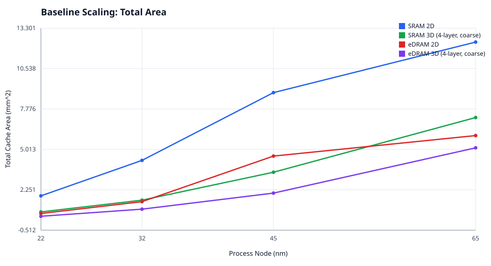
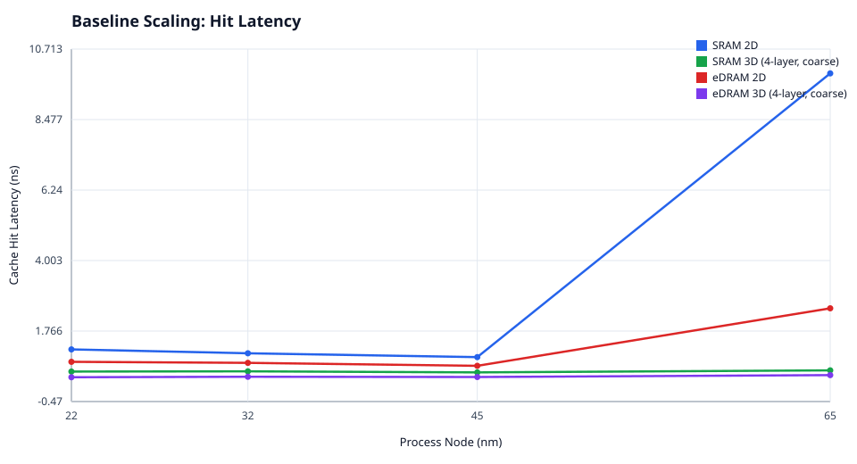
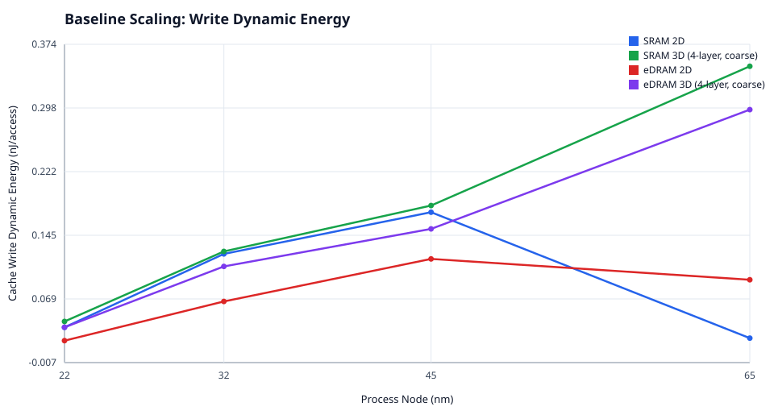
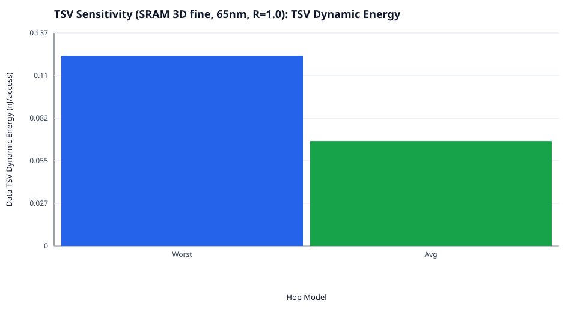

ESE 5760 Final Project (poster draft generated from in-repo experiments)
config/final/templates → generated & run via scripts/final_*.ps1.


ProcessNode and technology/stacking differ.
LocalTSVProjection/GlobalTSVProjection and compare aggressive vs conservative.
.cfg generation → runs → parsing → SVG figures.